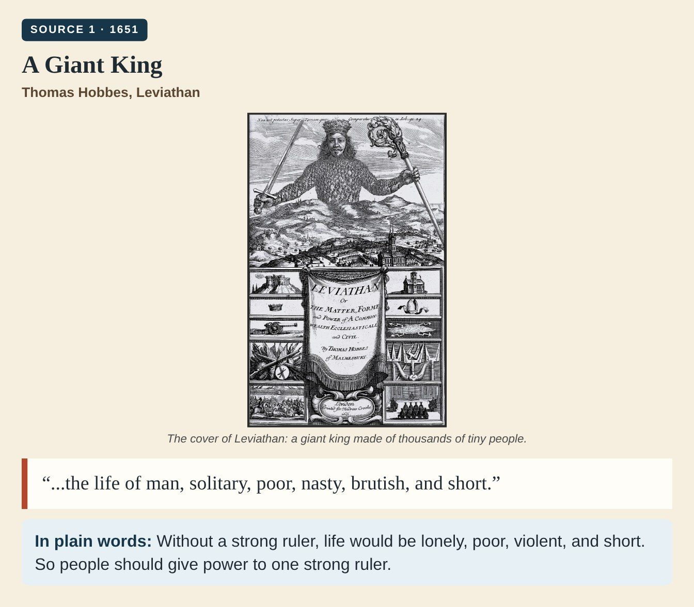

How it works: read the source pages → answer the question about today's big idea → read the fact file → write 1–2 sentences. Done = all parts green, then turn in at the bottom.
Word help (tap to open)
- Enlightenment = a movement that used reason to question kings, churches, and old ideas
- Natural rights = rights you are born with
- Separation of powers = splitting government into parts that check each other
- Tolerance = accepting people with different beliefs
- Primary source = something made by people who lived at the time: a letter, a speech, a picture, a law

Click the page to make it bigger.
Turn in your work
Your work saves on this device, so you can come back later. Your teacher sees it after you turn it in.
Sources: Thomas Hobbes, Leviathan (1651); John Locke, Second Treatise of Government (1689); Montesquieu, The Spirit of the Laws (1748, 1752 translation); portrait of Voltaire (about 1724); Mary Wollstonecraft, A Vindication of the Rights of Woman (1792); Encyclopédie (1751–1772). Portraits by Godfrey Kneller, John Opie, and others. Images public domain, via Wikimedia Commons.